소방설비산업기사(기계) (2004-09-05 기출문제)
1과목: 소방원론
1. 콘크리트에 대한 설명 중 틀린 것은?
- 콘크리트와 강재의 열팽창률은 거의 같다.
- 콘크리트의 열전도율은 목재보다 적다.
- 콘크리트는 장시간 화재에 노출되면 강도는 저하한다.
- 콘크리트는 인장력에 대하여 아주 약하다.
(정답률: 0%)

2. 중질유가 석유탱크에서 장시간 조용히 연소하다 탱크내의 잔존기름이 갑자기 분출하는 현상은?
- 프로드 오버(Froth over)
- 슬롭 오버(Slop over)
- 후래시 오버(Flash over)
- 보일 오버(Boil over)
(정답률: 62%)
3. 불티가 바람에 날리거나 또는 화재 현장에서 상승하는 열기류 중심에 휩쓸려 원거리 가연물에 착화하는 현상을 무엇이라 하는가?
- 비화
- 전도
- 대류
- 복사
(정답률: 알수없음)
4. 초기화재의 소화용으로 사용되지 않는 것은?
- 스프링클러설비
- 소화기
- 옥내소화전설비
- 연결송수관설비
(정답률: 알수없음)
5. 프로판가스는 방화관리상 위험하다. 그 이유로 가장 적당한 것은?
- 프로판가스는 상온에서 기체상태로 존재하며 폭발범위가 수소보다 넓다.
- 프로판가스는 연소하한계 값이 높아 화재위험성이 낮다.
- 프로판가스의 비중은 공기보다 무거워 바닥에 가라 앉는다.
- 프로판가스는 도시가스보다 비중이 가볍다.
(정답률: 34%)
6. 건물의 굴뚝 효과(stack effect)에 관한 설명 중 옳지 않은 것은?
- 평상시 건물내의 기류분포를 지배하는 중요한 요소이며, 화재시 연기의 이동에 큰 영향을 미친다.
- 실내 온도가 실외 온도보다 높은 경우, 저층부에서는 외부에서 실내 방향으로 공기의 흐름이 생긴다.
- 고층건물에서는 잘 나타나지 않고 주로 저층건물에서 나타나는 효과이다.
- 온도에 따른 공기의 밀도차 때문에 발생되는 공기의 흐름 현상이다.
(정답률: 82%)
7. 내화구조에 해당되는 것은?
- 철망 모르터 바르기로 그 두께가 2cm인 것
- 시멘트 모르터 위에 타일을 붙여 그 두께가 2.5cm인 것
- 철골에 두께 5cm의 콘크리트를 덮은 것
- 무근 콘크리트조로서 그 두께가 5cm인 것
(정답률: 알수없음)
8. 다음 원소 중에서 난연 성능이 없는 것은?
- 인(P)
- 안티몬(Sb)
- 아연(Zn)
- 비소(As)
(정답률: 알수없음)
9. 특수가연물에 해당되지 않는 것은?
- 면화류
- 사류
- 볏집류
- 메틸알콜
(정답률: 67%)
10. 다음 위험물 중에서 물을 사용하여 소화하면 더 위험해지는 것은?
- 피크린산
- 질산암모늄
- 알루미늄분
- 질화면
(정답률: 36%)
11. 지하 주차장에 사용할 수 있는 법정 분말 소화약제는?
- 인산염계
- 탄화수소나트륨계
- 탄화수소칼륨계
- 탄화수소칼륨과 요소계
(정답률: 70%)
12. 연소시 전형적인 분해연소의 특성을 보여주는 것은?
- 목재
- 나프탈렌
- 휘발유
- 흑연
(정답률: 54%)
13. 가연성 증기를 발생하는 액체 또는 고체와 공기의 계에 있어서,기체상 부분에 다른 불꽃이 닿았을 때 연소가 일어나는데 필요한 액체 또는 고체의 최저온도가 존재한다 이 온도를 어떤점이라 하는가?
- 발화점(ignition point)
- 인화점(flash point)
- 연소점(fire point)
- 산화점(oxidation point)
(정답률: 83%)
14. 건축물에 있어서 화재시 연소의 확대를 방지하기 위하여 방화구획을 설정하고 있다. 이 때 방화구획의 구획 기준이 아닌 것은?
- 피난 구획
- 수평 구획
- 수직 구획
- 용도 구획
(정답률: 알수없음)
15. 화재시 연기가 인체에 영향을 미치는 요인중 가장 나쁜 것은?
- 연기중의 부유물질
- 일산화탄소의 증가와 산소의 감소
- 연기중의 고정탄소의 양
- 연기속에 포함된 수분의 양
(정답률: 알수없음)
16. 가스화재 진압시 최우선적으로 취해야 하는 조치는?
- 가스 누출원을 차단한다.
- 누출된 가스를 안전하게 확산시킨다.
- 용기, 탱크 등을 식힌다.
- 경계구역을 설정한다.
(정답률: 77%)
17. 다음 설명 중 잘못된 것은?
- 발열량은 고발열량과 저발열량으로 나눈다.
- 발열량이란 단위량의 연료가 25℃, 1atm하에서 완전 연소될때 발생하는 열량을 말한다.
- 실질적으로 사용되는 발열량은 저발열량이다.
- 저발열량은 연소시 생성된 수증기의 증발잠열을 제외한 값이다.
(정답률: 알수없음)
18. 건축물의 주요 구조부에 해당하는 것은?
- 작은 보
- 옥외 계단
- 지붕틀
- 최하층 바닥
(정답률: 73%)
19. 다음은 LNG에 대한 설명이다. 잘못된 것은?
- 투명하면서 무색의 기체로 누설시 쉽게 인지하기 위하여 부취제를 첨가한다.
- 증기비중이 낮기 때문에 누설시 창문틈 등을 통하여 밖으로 배출된다.
- 탄소와 수소로 이루어진 기체 탄화수소이다.
- 프로판과 부탄이 주성분이다.
(정답률: 50%)
20. 분말소화약제 중 A, B, C급의 어떤 화재에도 사용할 수 있는 것은?
- 제3종분말 소화약제
- 제1종분말 소화약제
- 제2종분말 소화약제
- 제4종분말 소화약제
(정답률: 79%)
2과목: 소방유체역학
21. 무게가 45000 N이고 체적이 5.3 m3인 유체의 비중은?
- 0.623
- 0.682
- 0.866
- 0.901
(정답률: 30%)
22. 다음 설명 중 설명이 틀린 것은?
- 어떤 물체가 보유하고 있는 단위 중량당의 열용량을 비열이라 한다.
- 표준대기압하에서 순수한 물 1 kg을 14.5℃에서 15.5℃까지 올리는데 필요한 열량을 1 kcal라 한다.
- 표준대기압하에서 어떤 순수한 물 1 kg를 39棧에서 1棧 높이는데 필요한 열량을 1 Btu라 한다.
- 표준대기압하에서 어떤 순수한 물 1 lb를 1℃ 높이는데 필요한 열량을 1 Chu라 한다.
(정답률: 29%)
23. 관속을 물이 유속 10 m/s로 유동하다, 관경의 변화로 유속이 5 m/s로 변화되었다면 압력수두의 변화는? (단, 유동마찰손실은 무시하고 위치에너지는 동일한 것으로 한다.)
- 3.83 m 증가
- 3.44 m 증가
- 2.38 m 증가
- 2.78 m 증가
(정답률: 알수없음)
24. 공기 10 kg이 정적과정으로 20℃에서 250℃까지 온도가 변하였다. 이 경우 엔트로피의 변화는 얼마인가?(단, 공기의 Cv = 0.717 kJ/kg.K 이다.)
- 약 2.39 kJ/K
- 약 3.07 kJ/K
- 약 4.15 kJ/K
- 약 5.81 kJ/K
(정답률: 10%)
25. 그림과 같이 30° 로 경사진 원형수문에 작용하는 힘은 몇 kN 인가 ?
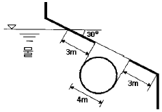
- 2.5
- 24.5
- 31.4
- 308
(정답률: 알수없음)
26. 텅스텐, 백금 또는 백금-이리듐 등을 전기적으로 가열하고 통과 풍량에 따른 열교환 양으로 속도를 측정하는 유속계는 어느 것인가?
- 열선 풍속계
- 포토디텍터 풍속계
- 컵형 풍속계
- 도플러 풍속계
(정답률: 37%)
27. 다음 그림에서 h=3 m일 때 지름 60 mm인 오리피스를 통해 유출되는 물의 유량을 구하면 몇 m3/s 인가? (단, 용기는 굉장히 크다고 가정하고 마찰손실은 무시한다.)
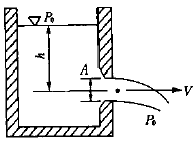
- 0.0217
- 0.217
- 5.374
- 9.266
(정답률: 알수없음)
28. 지구 오존층 파괴와 관련되어 문제점으로 대두되고 있는 소화약제는?
- 인산암모늄
- 할로겐화합물
- 라이트워터
- 탄산가스
(정답률: 알수없음)
29. 옥내소화전 호스 노즐에서 방수되는 물의 규정방수압 만족 여부를 측정하고자 할 때 사용하는 측정기기는?
- 피토게이지
- 압력게이지
- 벤튜리미터
- 피에조미터
(정답률: 40%)
30. 물이 안지름 600 mm의 파이프를 통하여 평균 3 m/s의 속도로 흐를 때, 유량은 약 몇 m3/s 인가?
- 0.85
- 1.8
- 0.3
- 2.8
(정답률: 47%)
31. 다음 중 원관내 층류유동에 관한 식이 아닌 것은?(단, η:와점성계수, μ:점성계수, γ:비중량, Q:유량, τ:전단응력, d:지름, ro:반지름, r:관중심으로부터의 거리, h:손실수두 )
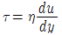
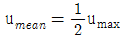
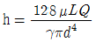
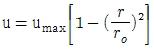
(정답률: 알수없음)
32. 직경 0.3 m인 관에 물이 0.3 m3/s가 흐르고 있다. 이 때 길이 300 m에 대해서 손실동력이 36.7 kW 일 때 관마찰 계수는 얼마인가?
- 0.0136
- 0.035
- 0.00125
- 0.0424
(정답률: 50%)
33. 다음 중 펌프의 이상현상인 공동현상(cavitation)의 발생 원인과 거리가 먼 것은?
- 펌프의 흡입측 손실이 클 경우
- 펌프의 마찰손실이 클 경우
- 펌프의 토출측 배관에 수조나 공기저장기가 있는 경우
- 펌프의 흡입측 배관경이 너무 작을 경우
(정답률: 59%)
34. 1 kg의 공기가 온도 18℃에서 등온 변화를 하여 체적의 증가가 0.5 m3 , 엔트로피의 증가가 0.2135 kJ/㎏.K 였다면, 초기의 압력은 약 몇 kPa 인가? (단, 공기의 기체 상수 R=0.287 kJ/kg.K 이다.)
- 204.4
- 132.6
- 184.4
- 231.6
(정답률: 알수없음)
35. 배관속의 물 흐름을 급히 차단하였을 때 동압이 정압으로 전환되면서 일어나는 쇼크(Shock)현상을 무엇이라고 부르는가?
- 공동현상
- 수격현상
- 와류현상
- 이로젼현상
(정답률: 알수없음)
36. ABC급 분말소화기 약제의 주성분으로 쓰이는 것은?
- NH4H2PO4
- NaHCO3
- KHCO3
- Al2(SO4)3
(정답률: 54%)
37. 단면 A를 통과하는 유체의 속도를 변수 u라 하면 이때의 미소단면은 dA이다. 이때 운동량수정계수(β )는 어떻게 표시할 수 있는가? (단, V는 유체의 평균속도이다.)
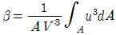
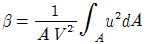
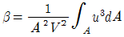
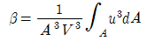
(정답률: 알수없음)
38. 할론 소화약제 중 독성이 가장 약한 것은?
- 할론 1211
- 할론 1301
- 할론 2402
- 할론 104
(정답률: 알수없음)
39. 비중이 1.03인 바닷물에 전체부피의 90%가 잠겨 있는 빙산이 있다. 이 빙산의 비중은 얼마인가?
- 0.85
- 0.956
- 0.927
- 0.912
(정답률: 46%)
40. 다음 중 포말 소화약제에 대한 설명으로 옳은 것은?
- 수성막포는 단백포 소화약제보다 유류화재에 소화 성능이 떨어진다.
- 수용성 유류화재에는 내알콜포 소화약제가 적합하다.
- 내알콜포 소화약제의 주성분은 제2철염이다.
- 합성 계면활성제포는 적열된 기름탱크 주위에 효과가 크다.
(정답률: 34%)
3과목: 소방관계법규
41. 화재경계지구의 지정대상지역이 아닌 것은?
- 공장이 밀집한 지역
- 고층건물이 많은 지역
- 위험물의 저장 및 처리시설이 밀집한 지역
- 소방시설 또는 소방출동로가 없는 지역
(정답률: 60%)
42. 화재예방· 소방활동· 소방훈련을 위하여 사용되는 소방신호의 종류와 방법은 무엇으로 정하는가?
- 지방자치령
- 대통령령
- 행정자치부령
- 치안본부령
(정답률: 30%)
43. 위험물 옥내저장소에 6류위험물을 저장할 경우 하나의 저장창고 바닥면적은 몇 m2 이하로 하여야 하는가?
- 300
- 500
- 800
- 1,000
(정답률: 42%)
44. 소화활동설비에 해당되는 것은?
- 상수도소화용수설비
- 비상콘센트설비
- 옥내소화전설비
- 비상방송설비
(정답률: 43%)
45. 제연설비는 어느 설비에 해당하는가?
- 소화설비
- 소화활동설비
- 경보설비
- 피난설비
(정답률: 65%)
46. 소방시설관리사가 되고자 하는 사람은 누가 실시하는 시험에 합격하여야 하는가?
- 행정자치부장관
- 소방서장
- 경찰서장
- 노동부장관
(정답률: 39%)
47. 공사를 수행중인 소방시설공사업자에게 등록의 취소 또는 영업의 정지처분 등이 있는 경우에는 지체없이 누구에게 알려야 하는가?
- 당해 지역의 소방본부장 또는 소방서장
- 등록하였던 해당 관청
- 공사중인 특정소방대상물의 관계인
- 당해 지역의 소방안전협회
(정답률: 알수없음)
48. 옥외소화전설비를 설치하여야 할 소방대상물은 지상1층 및 2층의 바닥면적의 합계가 몇 m2 이상인 것인가?
- 3,000
- 6,000
- 9,000
- 12,000
(정답률: 알수없음)
49. 소방본부장 또는 소방서장이 화재예방이나 소화활동을 위하여 명령할 수 있는 사항이 아닌 것은?
- 불장난, 흡연의 금지 또는 제한
- 화기의 우려가 있는 재의 처리
- 방치되어 있는 위험물의 이동
- 연소의 우려가 있는 소유자 불명의 물질에 대한 폐기
(정답률: 43%)
50. 층수가 몇 층이상인 관광호텔에는 반드시 인명구조기구를 설치하여야 하는가?
- 5
- 7
- 9
- 11
(정답률: 알수없음)
51. 소방서장이 소방검사를 하고자 하는 때에는 몇 시간 전에 관계인에게 이를 알려야 하는가?
- 12시간
- 24시간
- 48시간
- 72시간
(정답률: 알수없음)
52. 1급 방화관리대상물에 두어야 할 방화관리자로 선임될 수 없는 사람은 ?
- 위험물관리기능사 자격을 가진 사람으로서 위험물 안전관리자로 선임된 사람
- 소방공무원으로 5년이상 근무한 경력이 있는 사람
- 소방설비기사 또는 소방설비산업기사의 자격을 가진 사람
- 경위이상의 경찰공무원으로 3년이상 근무한 경력이 있는 사람
(정답률: 39%)
53. 소방시설업자가 등록사항의 변경을 신고하지 않아도 되는 것은 ?
- 영업소의 소재지
- 사무실 임대계약 금액
- 상호 또는 명칭
- 기술인력
(정답률: 알수없음)
54. 문화집회 및 운동시설로서 무대부의 바닥면적이 몇 제곱미터 이상인 경우 제연설비를 설치하여야 하는가?
- 200
- 300
- 400
- 500
(정답률: 0%)
55. 전문소방시설설계업을 등록하고자 할 때 주된 기술인력에 대한 기준에 맞는 것은?
- 기계분야 또는 전기분야 소방설비기사 자격자 1인 이상
- 기계분야 소방설비기사 자격자 1인이상과 전기분야 소방설비산업기사 자격자 1인이상
- 기계분야와 전기분야를 겸하여 취득한 경우에는 겸하여 취득한 소방설비기사 자격자 1인이상
- 소방기술사 1인 이상
(정답률: 10%)
56. 근린생활시설, 위락시설, 숙박시설 등은 연면적 몇 m2 이상인 경우에 자동화재탐지설비를 설치하여야 하는가?
- 400
- 600
- 800
- 1000
(정답률: 알수없음)
57. 화재의 현장에 소방활동구역을 설정하여 그 구역의 출입을 제한시킬 수 있는 사람은?
- 방화관리자
- 소방대상물의 관계인
- 구역내에 있는 소방대상물의 근무자
- 소방대장
(정답률: 60%)
58. 소방신호의 종류 중에서 타종신호방법이 난타인 신호는?
- 경계신호
- 발화신호
- 해제신호
- 훈련신호
(정답률: 67%)
59. 소방공사감리업의 종류별 구분으로 옳은 것은?
- 제1종소방공사감리업 및 제2종소방공사감리업
- 갑종소방공사감리업 및 을종소방공사감리업
- 일반소방공사감리업 및 특수소방공사감리업
- 전문소방공사감리업 및 일반소방공사감리업
(정답률: 알수없음)
60. 비상경보설비를 설치하여야 할 특정소방대상물 중 잘못된 것은?
- 50인 이상의 근로자가 작업하는 옥내작업장
- 지하가중 터널로서 길이가 500미터 이상인 것
- 연면적이 500제곱미터 이상인 것
- 지하층 또는 무창층의 바닥면적이 150제곱미터 이상인 것
(정답률: 알수없음)
4과목: 소방기계시설의 구조 및 원리
61. 스프링클러 헤드의 반사판 중심과 보의 수평거리가 1.2m 일 때 스프링클러 헤드의 반사판 높이와 보의 하단높이의 수직 거리는 얼마이어야 하는가?
- 15cm 미만
- 20cm 미만
- 25cm 미만
- 30cm 미만
(정답률: 30%)
62. 피난기구의 하나인 완강기는 조속기, 로프, 벨트 및 후크 등으로 구성되어 있다. 이때 로프 심선의 직경은 몇mm 이상이 적당한가?
- 1
- 3
- 10
- 15
(정답률: 0%)
63. 청정소화설비 중 INERGEN 가스소화설비의 INERGEN은 무엇으로 이루어져 있는가?
- 불활성가스+질소
- 불활성가스+염소
- 불활성가스+불소
- 불활성가스+탄소
(정답률: 28%)
64. 다음 그림과 같은 제연구역에서 급기량 산정을 위한 전체 문의 누설틈새면적 산출공식은?
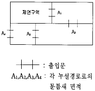
- A1+A2+A3+A4
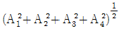
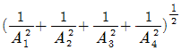
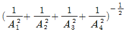
(정답률: 0%)
65. 아파트의 지하주차장에 물분무소화설비를 계획하려고 한다. 바닥면적은 70m2, 물분무노즐의 방수압력은 3kgf/cm2 일 때 소화펌프의 토출량은?
- 1,000 ℓ /min 이상
- 1,400 ℓ /min 이상
- 3,000 ℓ /min 이상
- 4,200 ℓ /min 이상
(정답률: 알수없음)
66. 공장외곽에 옥외소화전이 5개소 설치되어 있다. 총양정이 121.5m, 펌프효율이 60[%]이고 전동기 직결방식으로 펌프를 운전할 경우 전동기의 출력은 몇 [kw]이상이어야 하는 가? (단, 전달계수 k=1.1이다.)
- 25.5
- 30
- 37.5
- 23.2
(정답률: 0%)
67. 옥내소화전 설비에서 노즐구경이 13mm이고 노즐선단의 압력이 2kgf/cm2일 때 노즐의 방수량은 얼마인가?
- 156ℓ
- 1.56ℓ
- 15.6ℓ
- 0.156ℓ
(정답률: 알수없음)
68. 연결 송수관 설비에서 송수구의 부근에는 자동 배수밸브 또는 체크밸브를 설치하여야 한다. 설치기준으로 맞는 것은?
- 습식의 경우에는 송수구, 자동 배수밸브, 체크밸브의 순으로 설치하여야 한다.
- 습식의 경우에는 송수구, 체크밸브, 자동 배수밸브의 순으로 설치하여야 한다.
- 건식의 경우에는 송수구, 체크밸브, 자동 배수밸브의 순으로 설치하여야 한다.
- 건식의 경우에는 송수구, 자동 배수밸브, 체크밸브의 순으로 설치하여야 한다.
(정답률: 알수없음)
69. 포소화 약제의 혼합장치 중 급수 배관의 도중에 포소화 약제 흡입기를 설치하여 그 흡입관에서 포 소화약제를 흡입하여 혼합하는 방식은 어느 것인가?
- 펌프 프로포셔너
- 프레셔 사이드 프로포셔너
- 라인 프로포셔너
- 프레셔 프로포셔너
(정답률: 20%)
70. 다음중 분말 소화기 점검상의 착안사항 중 적당치 않은 것은?
- 노즐, 레버의 동작이 원활할 것
- 적정량의 소화약제가 있는지를 점검할 것
- 안전봉인이 끊어져 있지 않을 것
- 뚜껑을 열어 약제가 굳지 않았나 될 수 있는한 자주 점검할 것
(정답률: 알수없음)
71. 이산화탄소 소화설비의 가스 용기 밸브에 대해서 옳지 않은 것은?
- 개방후에는 폐지할 수가 없다.
- 다른 밸브와 같이 개방후 폐지하게 돼 있다.
- 보통 기온의 변화와 진동에 대해서 안전하며 새지 않는다.
- 전자밸브나 가스압에 의해 즉시 열리게 돼 있다.
(정답률: 알수없음)
72. 스케줄 번호는 배관의 무엇을 나타내는가?
- 배관의 길이
- 배관의 구경
- 배관의 두께
- 배관의 재질
(정답률: 27%)
73. 소화능력단위에 의한 분류에서 소형소화기를 올바르게 설명한 것은?
- 능력단위 1단위 이상이면서 대형소화기의 능력단위 미만인 소화기이다.
- 능력단위 3단위 이상이면서 대형소화기의 능력단위 미만인 소화기이다.
- 능력단위 5단위 이상이면서 대형소화기의 능력단위 미만인 소화기이다.
- 능력단위 10단위 이상이면서 대형소화기의 능력단위 미만인 소화기이다.
(정답률: 알수없음)
74. 분말 소화설비의 배관 방법 중 동관을 사용하는 경우 배관의 최고 사용압력의 몇배 이상의 압력에 견딜수 있어야 하는가?
- 0.5
- 1.5
- 2.5
- 3.5
(정답률: 55%)
75. 알콜류, 에스테르류, 아세톤 등의 위험물 화재시 일반 포 소화약제를 방사하면 수용성(물에 녹음)이기 때문에 포가 쉽게 소멸(소포성) 되어 효과가 없다. 이러한 단점을 방지하기 위하여 수용성 위험물에 사용되는 포소화 약제 이름은 무엇인가?
- 수성막포
- 알콜포
- 단백포
- 계면활성포
(정답률: 알수없음)
76. 소화용수 설비에서 소화수조는 소방펌프 자동차가 채수구로부터 어느 정도 거리까지 접근할 수 있는 위치에 설치하여야 하는가?
- 2m 이내
- 4m 이내
- 6m 이내
- 8m 이내
(정답률: 46%)
77. 스프링클러 헤드의 정비에 관한 설명 중 틀린 것은?
- 변형, 파손, 또는 부식된 것은 바꾸어 준다.
- 폐쇄형 헤드를 취부할 때 천정온도가 변하여도 영향 없다.
- 헤드 및 배관에 물건을 걸어 놓지 않는다.
- 헤드의 감열 혹은 살수를 방해하는 물건 또는 장식은 떼어 놓는다.
(정답률: 86%)
78. 폐쇄형 스프링클러 헤드의 감도를 예상하는 지수인 RTI와 관련이 깊은 것은?
- 기류의 온도와 비열
- 기류의 온도, 속도 및 작동시간
- 기류의 비열 및 유동방향
- 기류의 온도, 속도 및 비열
(정답률: 53%)
79. 연결송수관설비에 관한 설명으로 옳은 것은?
- 연결송수관설비는 화재발견자가 신속하게 주수소화할 수 있도록 설치된, 옥내소화전 보다 강화된 소화설비이다.
- 습식설비는 관내에 물이 충진되어 있어 송수시 유동 저항이 크고 누설 등이 우려된다.
- 건식설비는 관리가 쉬우며 송수시 유동저항이 적어 신속하게 방수할 수 있는 장점이 있다.
- 습식설비는 고층인 대상물에, 건식설비는 저층인 대상물에 적합하다.
(정답률: 알수없음)
80. 펌프, 송풍기등의 건물바닥에 대한 진동을 줄이기 위해 사용하는 방진재료가 아닌 것은?
- 방진 고무
- 워터 햄머쿠션
- 금속스프링
- 공기스프링
(정답률: 알수없음)